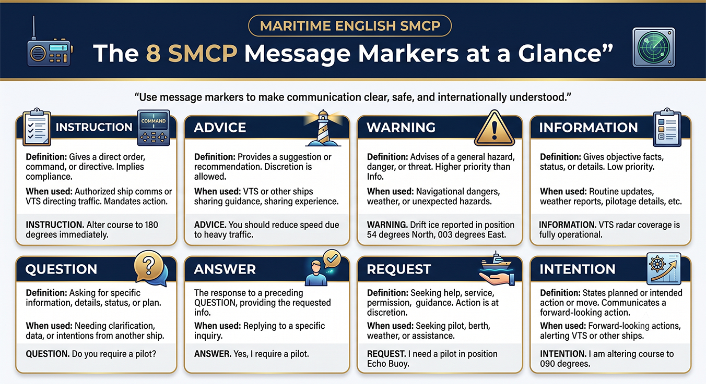
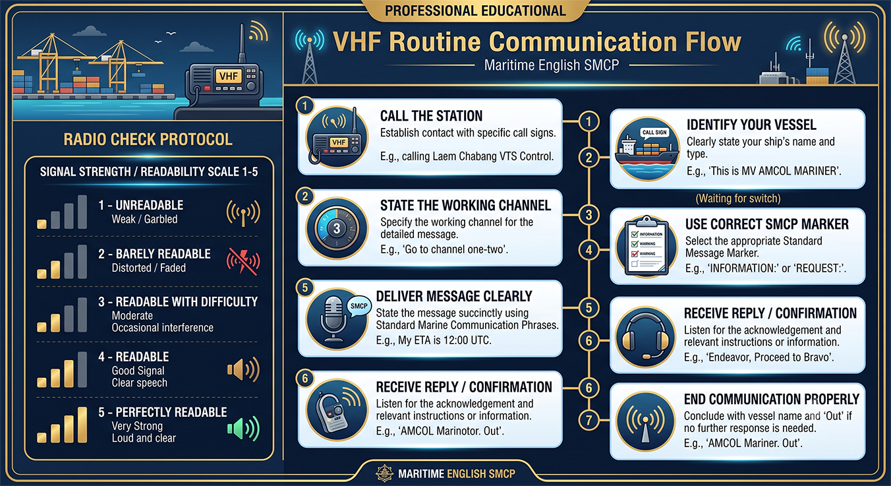
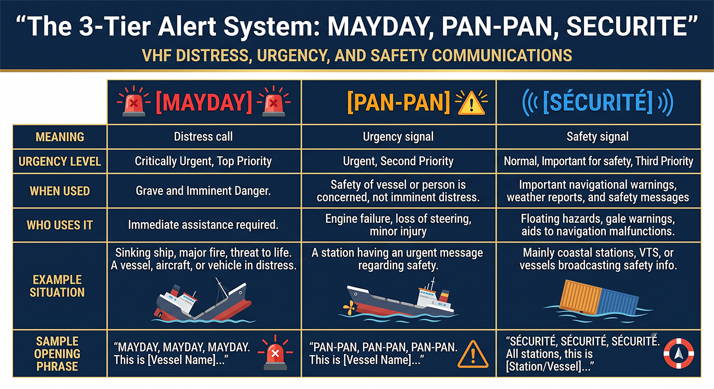
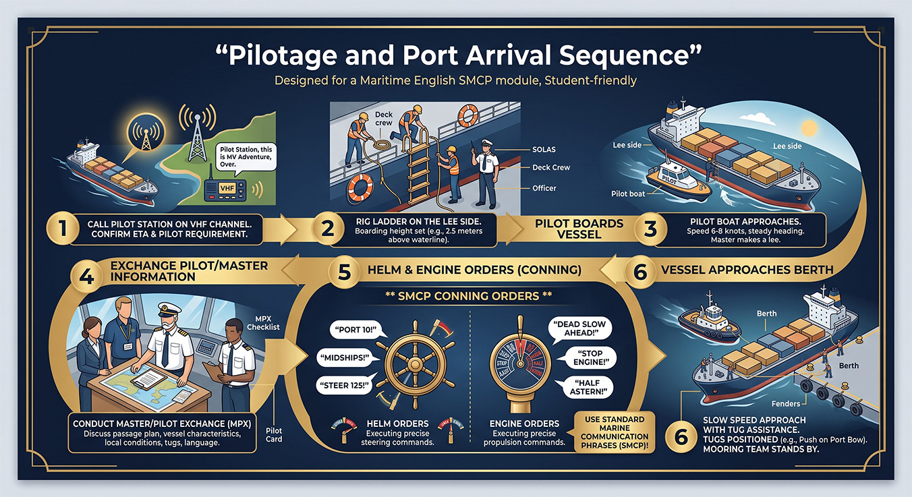
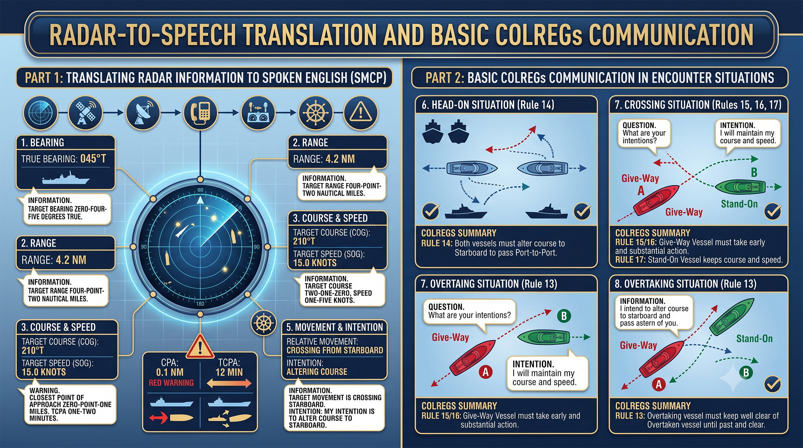
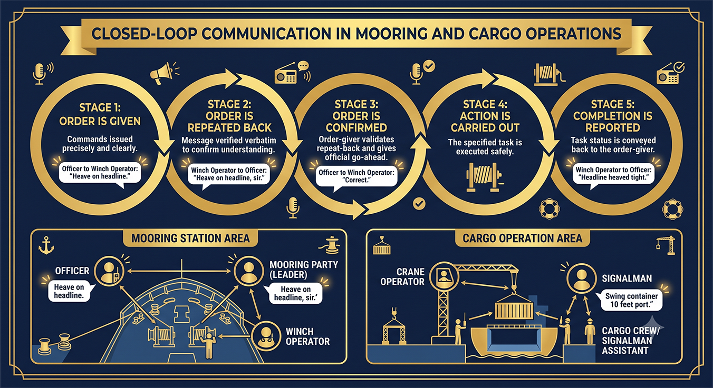
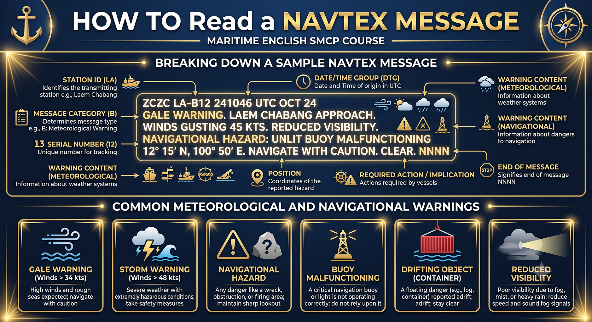

Course Map & Directory
Infographics and comic scenarios by unit
Open a unit to view its infographic, comic scenario, detailed lesson, audio practice, and knowledge checks.

Unit 1The 8 SMCP Message Markers at a Glance
Unit 2VHF Routine Communication Flow
Unit 3The 3-Tier Maritime Alert System
Unit 4Pilotage and Port Arrival Sequence
Unit 5Radar-to-Speech and Encounter Awareness
Unit 6Closed-Loop Communication in Mooring and Cargo
Unit 7How to Read a NAVTEX MessageUse this page as the central directory for the complete SMCP interactive course. Every unit, assessment page, lab, worksheet, and teacher support page is listed here for quick navigation.